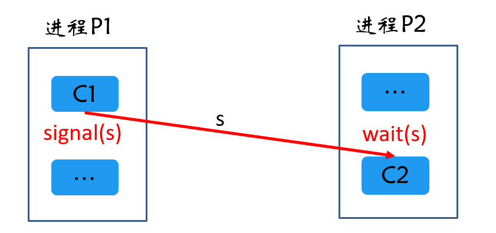
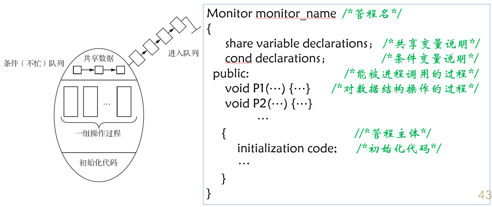
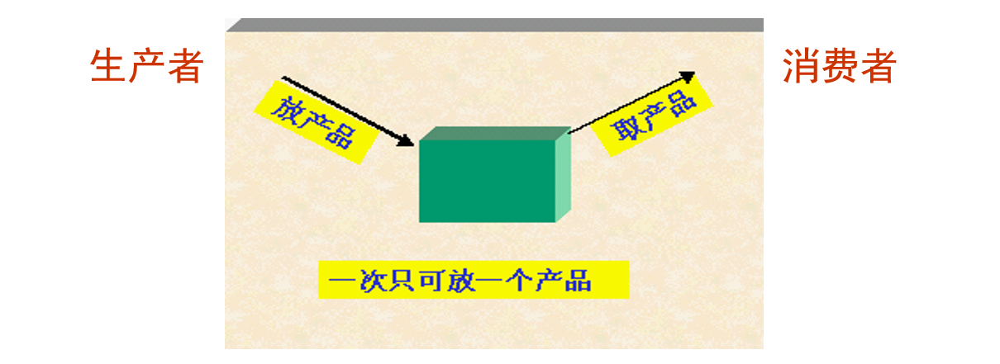
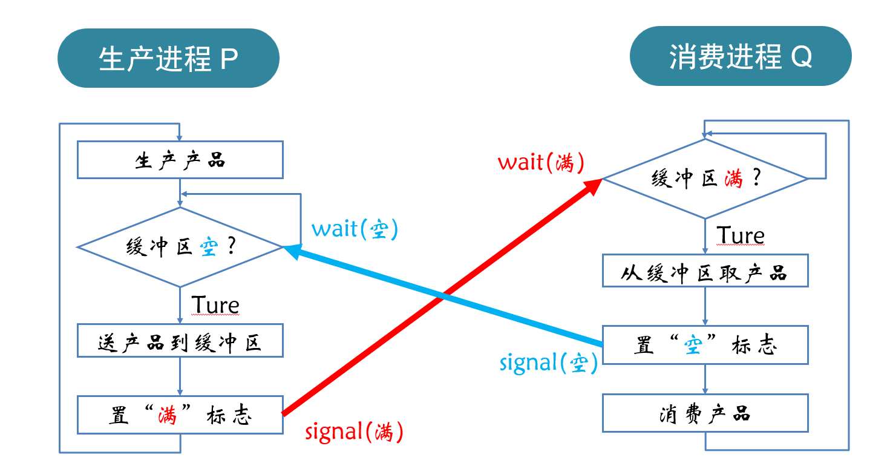
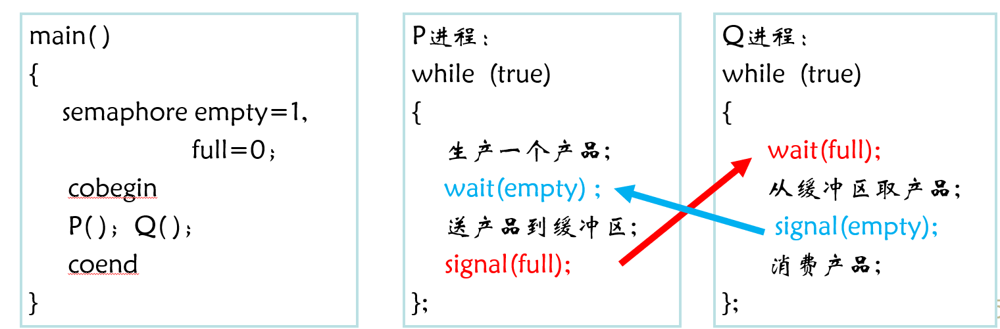
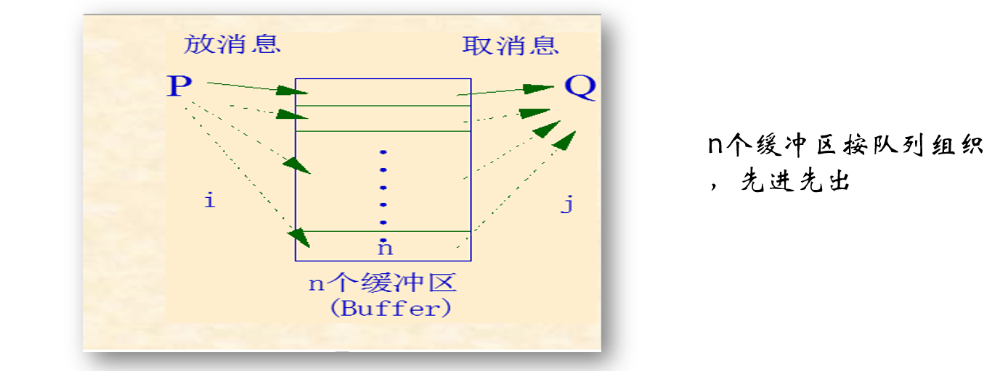
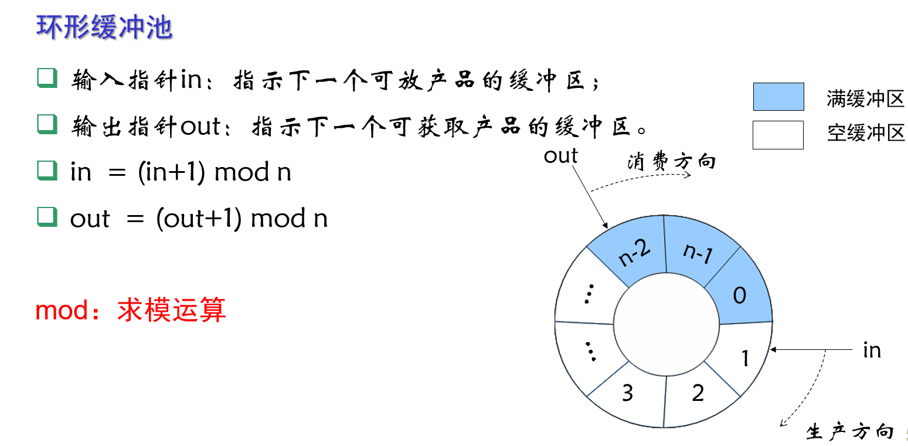
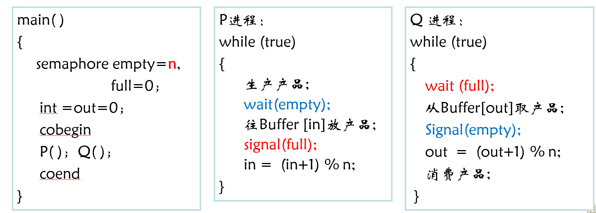

第一章 操作系统引论 第二章 进程的描述与控制 第三章 处理机调度与死锁 第四章 进程同步 第五章 存储器管理 第六章 虚拟存储器 第七章 输入/输出系统 第八章 文件管理 第九章 磁盘存储器管理
1 进程同步的概念1.1 进程同步1.2 主要任务1.3 进程间的制约关系1.4 临界资源1.5 同步机制应遵循的准则1.6 进程同步机制2 软件同步机制3 硬件同步机制3.1 锁机制3.2 如何上锁、开锁？3.3 锁机制实现方法4 信号量机制4.1 信号量4.2 信号量的一般结构和PCB队列4.3 P、V原语操作4.3.1 P操作4.3.2 V操作4.4 用P、V操作实现互斥4.5 用P、V操作实现同步4.6 利用信号量来描述前趋关系5 管程机制5.1 管程定义5.2 互斥和同步操作5.2.1 互斥5.2.2 同步6 经典进程的同步问题6.1 生产者-消费者问题6.1.1 情形1：单生产者-单消费者-单缓冲区6.1.2 单生产者-单消费者-多缓冲区6.1.3 多生产者-多消费者-多缓冲区6.2 哲学家就餐问题6.3 读者-写者问题
异步环境下的一组并发进程因直接制约而互相发送消息、进行互相合作、互相等待，使得各进程按一定的速度执行的过程称为进程同步。具有同步关系的一组并发进程称为合作进程，合作进程间互相发送的信号称为消息或事件。
使并发进程之间能有效地共享资源和相互合作，从而使程序执行具有可再现性。
同步与互斥表示了进程之间的相互依赖又相互制约、相互合作又相互竞争的关系。
临界资源：一段时间内只允许一个进程使用的资源。如打印机、磁带机等都属于临界资源，也称为互斥资源或共享变量。
临界区(critical section)：进程访问临界资源的那段代码。
访问临界资源的描述：
xxxxxxxxxxRepeatentry section //进入区：检查有无进程进入critical section //临界区：进程访问临界资源的代码exit section //退出区：将访问标志复位remainder section //保留区：其他处理Until false
实现进程协作（同步/互斥）的措施和方法，称为进程同步机制（或机构）。
包括软件同步机制（编程解决临界区问题，现在很少采用）、硬件同步机制（锁机制）、信号量机制（有效、应用广泛）、管程机制。
Peterson解决方案
用变量lock代表某个共享临界资源的状态，称为“锁”。 当lock=false时，表示资源空闲，锁开，可以访问；当lock=true时，表示资源被占用，锁闭，暂时不能访问。
检查lock的值；如果lock为true，反复检测；如果lock为false，马上将锁置为true，表示立即占用该临界资源，程序进入临界区执行（即上锁操作）；临界资源使用完毕，将lock置false（开锁）。
信号量(Semaphores)：是一种数据结构，是进程同步的工具。操作系统利用信号量的状态对并发进程和共享资源进行控制和管理。 信号量是整形变量。当变量值 ≥ 0 时，表示绿灯，进程执行；当变量值 ＜ 0 时，表示红灯，进程停止执行。
信号量是一个确定的二元组（s，q），s是一个具有非负初值的整型变量，q是一个初始状态为空的队列。
xxxxxxxxxxstruct semaphore{s:integer; //s:为一整形值q:list of process; //q:为进程链表，用于链接所有等待该类资源进程}
信号量基本概念：
P操作：wait()，申请一个单位资源。
P(s)表示申请一个资源，即信号灯值减1，若结果为负数，则该进程被阻塞，并插入等待队列中，否则可以继续执行。
V操作：signal()，释放一个单位资源
V(s)是表示信号灯值加1，若结果大于零，该进程继续执行，否则，要帮助唤醒等待队列上的一个进程。
例如，进程P1和P2需要代码段C1比C2先运行。设：semaphores s=0; //主要用于传递信号

在同步关系中，同一信号量的wait和signal操作必须放在相关的进程中！即：
xxxxxxxxxxP1(){C1;signal(s); //发送信号...}P2(){...wait(s); //等待信号C2;}
分析：
一个管程定义了一个数据结构和能为并发进程所执行（在该数据结构上）的一组操作，这组操作能同步进程和改变管程中的数据。 
condition x,y;x.wait()进程阻塞直到另外一个进程调用x.signal()唤醒它；
缓冲区“满”时，Q才可继续执行，否则等待P发送数据； 缓冲区“空”时，P才可继续执行，否则等待Q取走数据；

算法描述：


至少有1个缓冲区“满”时，Q才可继续执行，否则等待P发送数据； 至少有1个缓冲区“空”时，P才可继续执行，否则等待Q取走数据。 
算法描述：
